Serie temporal, validación de anomalías, corrección ambiental y filtrado por media móvil con trazabilidad.
Preguntas a la serie, herramientas estadísticas, cálculo de velocidad/aceleración, velocidad inversa y rezago.
Integración de sensores puntuales con mapas y cambios del terreno para identificar dónde y hasta dónde ocurre el movimiento.
Contraste entre lo medido y lo predicho por el diseño: cuándo continuar, cuándo recalibrar y cuándo intervenir.
Cuatro fuentes de umbrales, línea base, percentiles, el semáforo de alerta, reglas combinadas y tiempo de anticipación.
Componentes del SAT, protocolo de acción y comunicación, tormenta integrada, ejercicio práctico y mantenimiento.
Una serie temporal es una secuencia de datos recolectados a lo largo del tiempo. En geotecnia, representan el comportamiento de una variable como desplazamiento, presión de poros o lluvia.
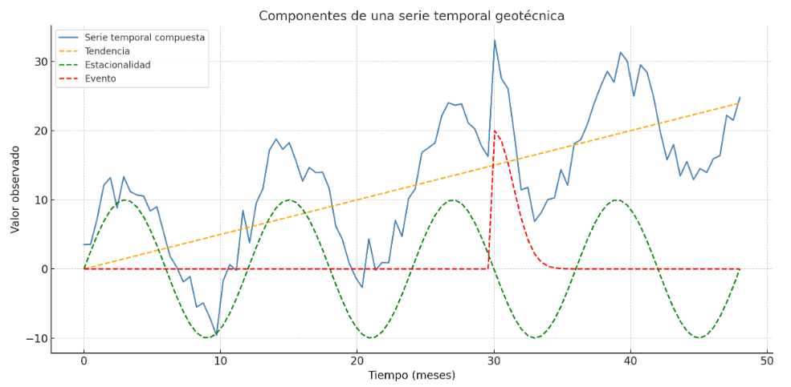
Separar el efecto de la temperatura del movimiento real.
Muchos sensores geotécnicos (cuerda vibrante, galgas, extensómetros, acelerómetros) son sensibles a los cambios térmicos diarios y estacionales.
🔗 Es lo mismo que vimos con los acelerómetros y la cuerda vibrante en el módulo 04.
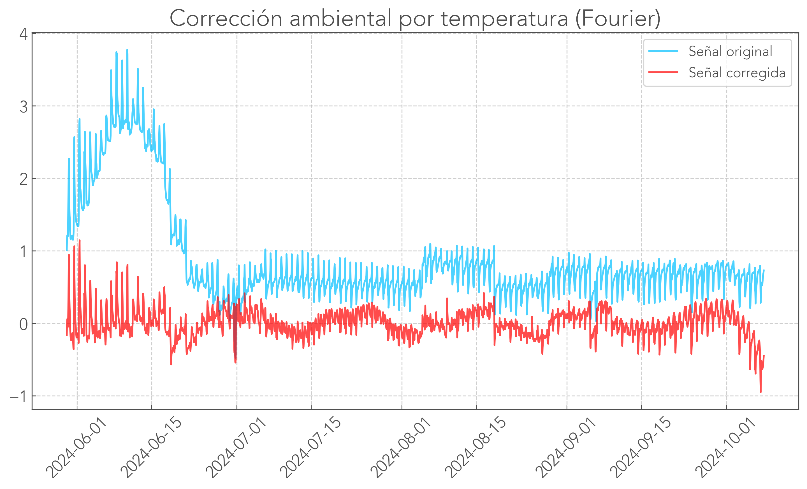
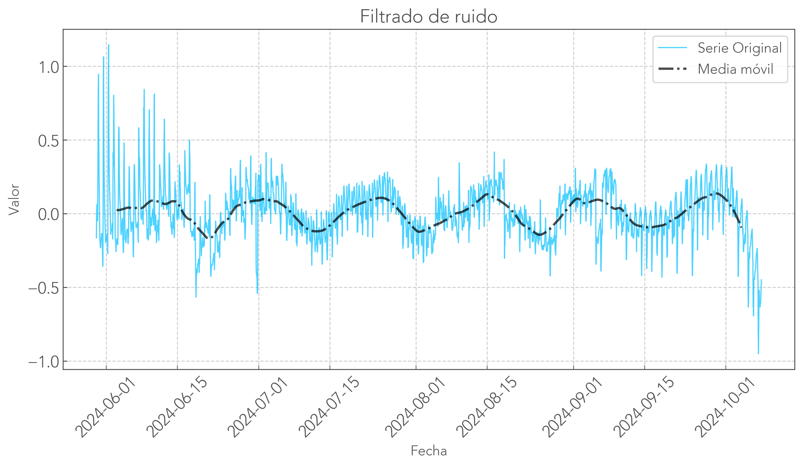
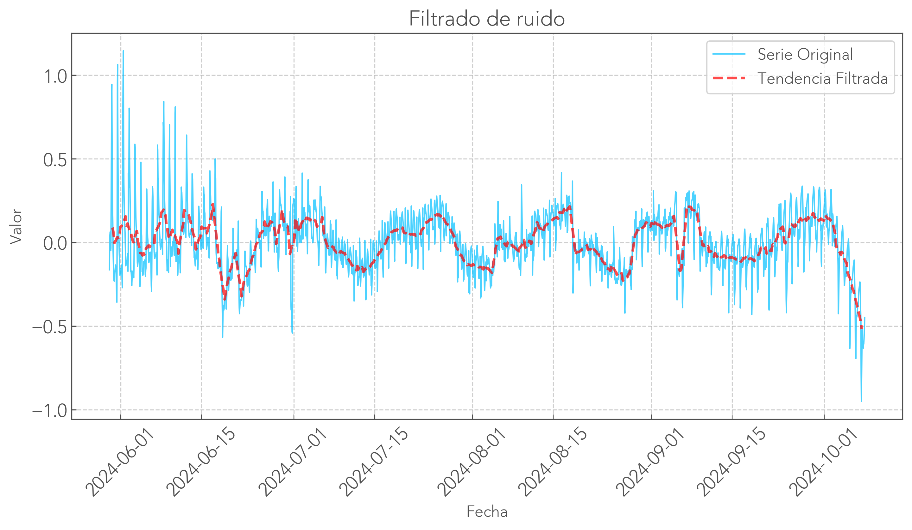
Misma serie, dos filtros: media móvil (izquierda) y tendencia filtrada (derecha).
El análisis permite resumir el comportamiento histórico, aislar cambios cinemáticos y definir umbrales. La estadística es nuestra mejor aliada.
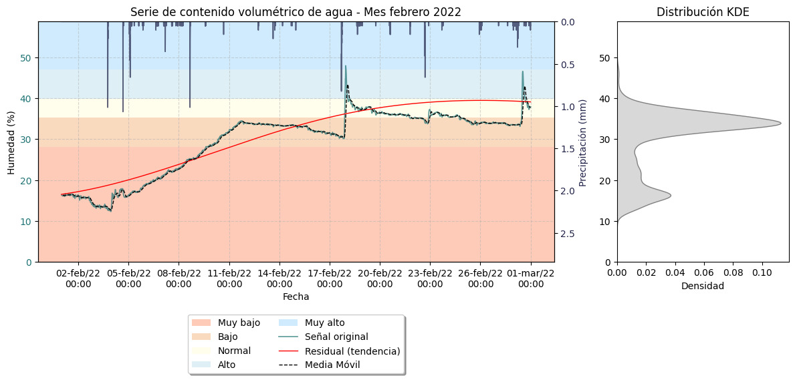
La curva verde registra el detalle horario; la punteada suaviza el ruido y la línea roja captura el ascenso gradual del mes.
Los pulsos abruptos (18-feb y 28-feb) responden directamente a los eventos de precipitación (barras superiores).
La curva de densidad derecha muestra dos modas ($\sim 16\%$ y $\sim 34\%$): dos estados de humedad del suelo. *(Bandas de color según percentiles históricos de la estación)*.
Una relación indica que dos variables cambian juntas, pero no necesariamente de forma proporcional o lineal. Puede ser visual, causal o indirecta.
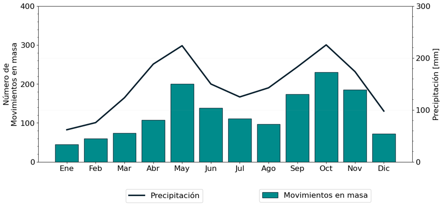
Cuantifica la fuerza y dirección de una relación lineal entre dos variables, en una escala entre $-1$ y $+1$:
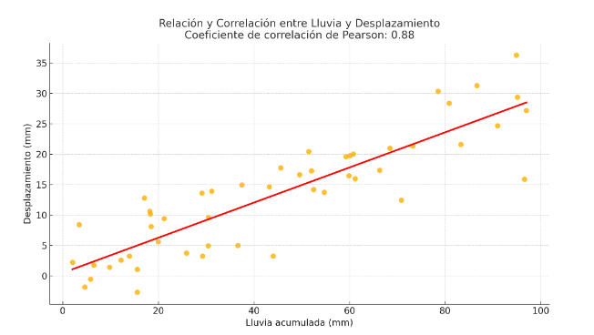
* Datos sintéticos ilustrativos ($r = 0{,}88$): siempre verificar el sentido físico del proceso.
| Señal en la serie | Significado físico potencial | Forma típica | ¿Qué hacer primero? |
|---|---|---|---|
| 1. Cambio de pendiente | Aceleración cinemática del terreno o pérdida progresiva de rigidez. | Calcular la velocidad ($v$ y $a$, diap. 14) | |
| 2. Salto brusco | Desprendimiento localizado, rotura interna o desfase por manipulación. | Revisar si es intervención o evento | |
| 3. Estancamiento | Posible daño en el instrumento, pérdida de señal o bloqueo mecánico. | Verificar el equipo (anomalía «congelado», diap. 7) | |
| 4. Comportamiento repetitivo | Respuesta cíclica diaria (térmica) o estacional ante temporadas de lluvia. | Confirmar si se recupera (cíclico vs. tendencia) | |
| 5. Correlación entre variables | Pico de lluvia seguido por incremento en presión de poros y deformación. | Buscar el rezago ($\Delta t$ lluvia–respuesta, diap. 18) |
Integrar mapas con las variables medidas (desplazamiento, humedad, presión de poros) permite visualizar áreas críticas y delimitar la masa inestable. Herramientas: gráficas de dispersión, series de tiempo, histogramas y correlación espacial sobre ortofotos y modelos digitales (DSM).
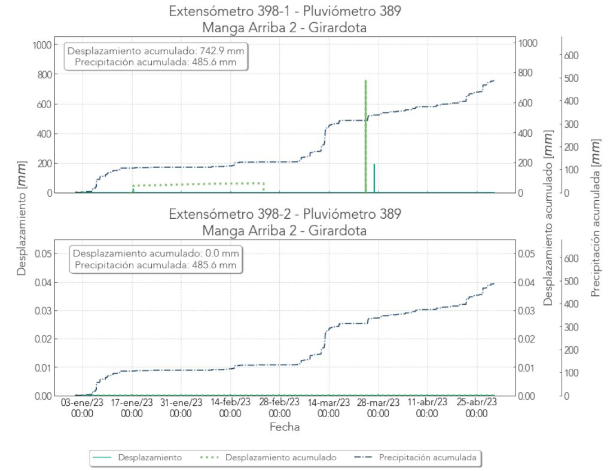
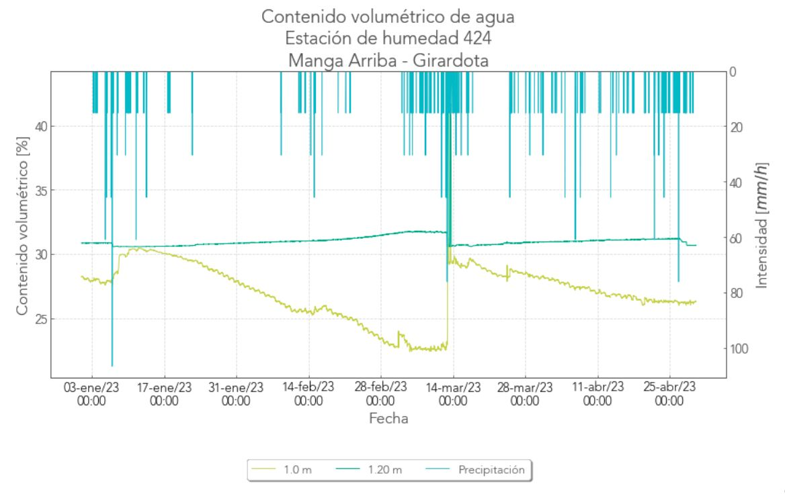
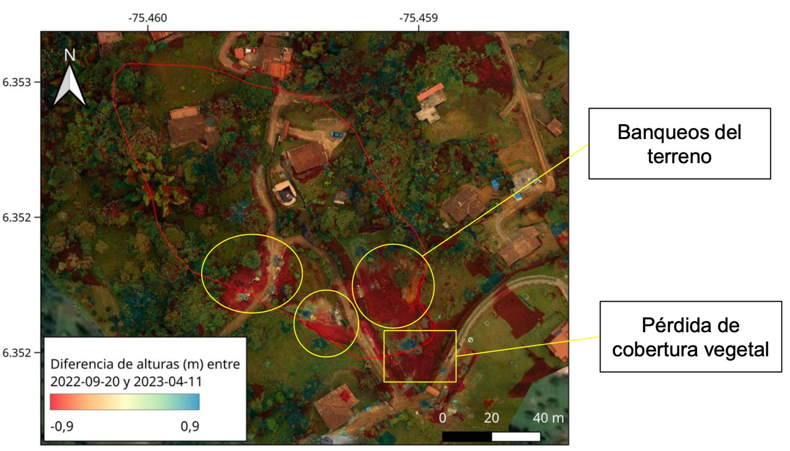
Límites técnicos predefinidos que indican la necesidad de acciones preventivas o correctivas. Cuando se superan, señalan que el terreno o estructura se acerca a una condición de inestabilidad o daño.
Permiten escalar niveles de alerta y actuar antes del colapso (ej. incremento de presión de poros o velocidad que activa el protocolo de respuesta).
Basado en la observación y experiencia acumulada en el sitio o en una región homogénea. Relaciona la magnitud de eventos pasados (ej. intensidad–duración de lluvia) con la ocurrencia real de deslizamientos.
📋 Requiere eventos registrados: sin historial documentado de lluvias y movimientos, no aplica.
Rápida implementación e interpretación directa cuando existen series históricas confiables y catálogo de eventos.
No es extrapolable a otros sitios ni se adapta por sí solo cuando cambia la geometría del talud o el uso del suelo.
Muestra dos concentraciones claras ($\sim 51\%$ y $\sim 61\%$), que corresponden a dos estados físicos del suelo: temporada seca y temporada húmeda. El promedio ($\sim 56\%$) cae en un valle donde el suelo casi nunca está.
Casi siempre es cero (horas o días sin lluvia), con muy pocos eventos extremos muy grandes hacia la derecha.
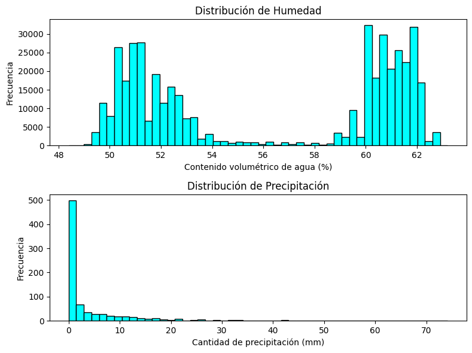
Se basa en modelos matemáticos, físicos o numéricos (infiltración acoplada, equilibrio límite, elementos finitos) que simulan escenarios de lluvia o carga sobre el terreno.
Ejemplo práctico: Determinar a qué presión de poros $u$ (o nivel piezométrico) el factor de seguridad ($FS$) del talud baja a un valor crítico definido (ej. $FS = 1{,}10$ para Alerta y $FS = 1{,}02$ para Alarma).
Tiene base física explícita y permite definir umbrales incluso antes de que ocurra una falla real en el sitio.
Alta sensibilidad a la incertidumbre en los parámetros del suelo ($c', \phi', k$) y en las condiciones de frontera.
Las normativas y reglamentos técnicos locales o internacionales establecen el marco obligatorio de seguridad para estudios, diseño y desempeño de obras geotécnicas.
Establecer valores límite progresivos para cada sensor (inclinómetros, piezómetros, extensómetros) que permitan anticipar el paso de una condición normal a una crítica.
Cada nivel dispara una acción definida (diap. 31) y un responsable (diap. 36). Un umbral sin acción asignada es solo una línea en una gráfica.
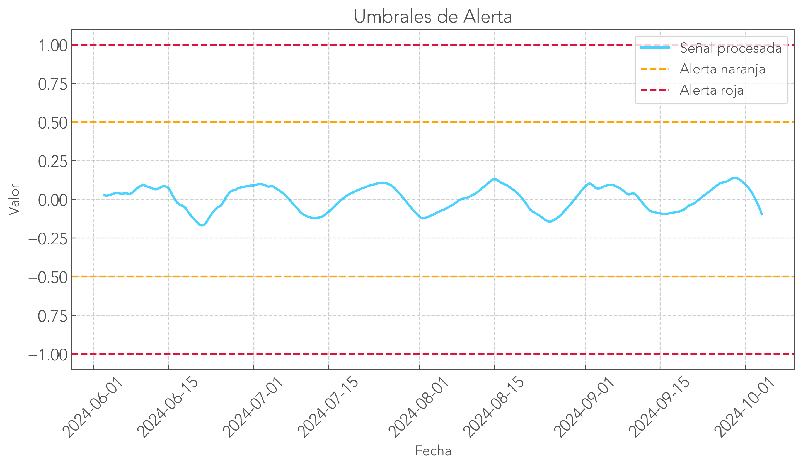
| 🟢 Normal | 🟡 Atención | 🟠 Alerta | 🔴 Alarma | |
|---|---|---|---|---|
| Condición (ejemplo) | Variables dentro del rango histórico | Superan el $P_{90}$ o la lluvia acumulada supera el umbral bajo | Superan el $P_{95}$, o hay velocidad creciente y sostenida | Umbral crítico superado y aceleración clara ($1/v$ decrece) |
| Acción técnica | Monitoreo rutinario | Más frecuencia de lectura e inspección visual | Verificar en campo; preparar la evacuación | Ejecutar el plan de emergencia |
| Comunicación | Reportes periódicos | Aviso al equipo técnico | Aviso a autoridades y a la comunidad expuesta | Alarma directa (sirenas, mensajes, radio) |
| Revisión | Semanal | Diaria | Cada hora | Continua |
| Hubo falla | No hubo falla | |
|---|---|---|
| Se emitió alerta | ✅ Acierto | ❌ Falsa alarma |
| No se emitió | ⚠️ Alarma perdida | ✅ Normal correcto |
Un sensor supera un umbral y se genera la señal.
SistemaSe descartan errores de datos y se confirma con otras variables.
Equipo técnicoQuien tiene la responsabilidad autoriza el nivel de alerta.
AutoridadEl mensaje sale por varios canales y llega a la comunidad.
ComunicacionesLa comunidad y las entidades ejecutan el plan de respuesta.
ComunidadDescripción simple del fenómeno
Zonas y barrios afectables
Tiempo disponible para actuar
Una instrucción clara y concreta
¿Qué marcas, excluyes o corriges antes de interpretar?
¿Línea base, rezago y etapa cinemática tras la lluvia?
¿Nivel actual a las $150\text{ h}$ y tiempo estimado hasta $U_2$?
Con $6\text{ h}$ de respuesta, ¿qué haces ya y quién decide?
Qué puede fallar, dónde y a quién afectaría.
Elige qué medir y en qué zona.
Meses de datos para saber qué es «normal».
Cada nivel con su condición y su acción.
Quién decide, quién avisa y cómo se responde.
Simulacros y validación con eventos pasados.
Calibración, limpieza, energía, comunicaciones con respaldo, y bitácora y trazabilidad de cada intervención.
Se revisan tras cada evento, falsa alarma o cambio en el terreno: cierra la retroalimentación de la diap. 3.
Capacitación, simulacros periódicos y relevo de responsables.
Consolidación de objetivos, esquema de monitoreo, análisis temporal y espacial, propuesta de umbrales y conclusiones operativas.
federicogmz.github.io/instrumentacion-geotecnica/lecturas.html#m5